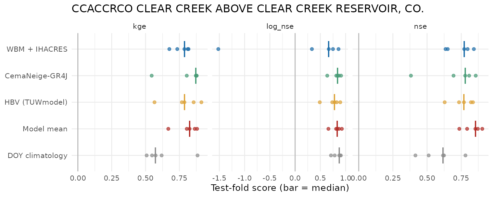
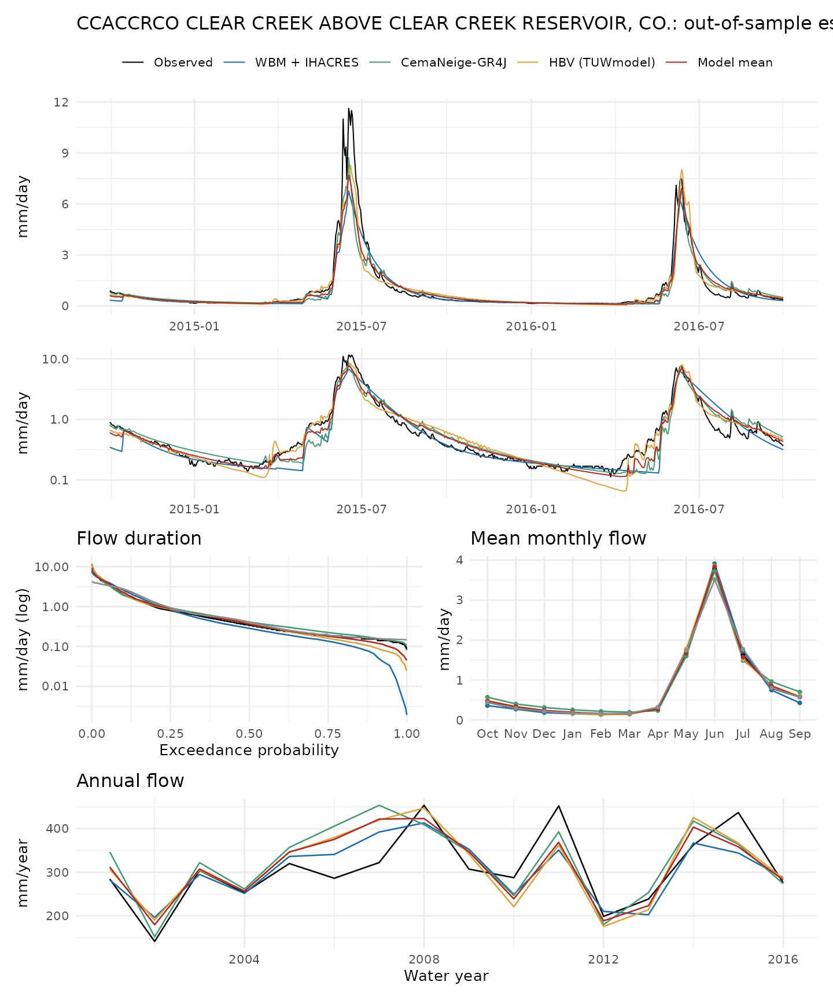
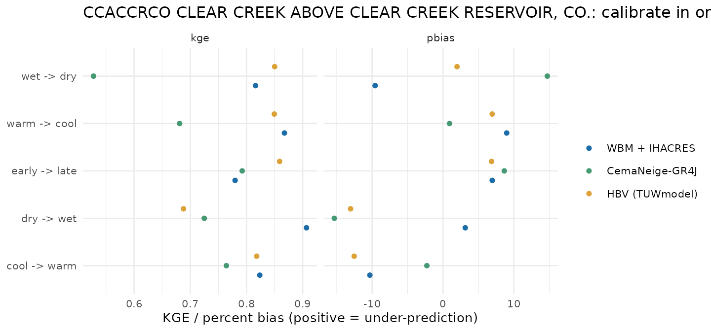
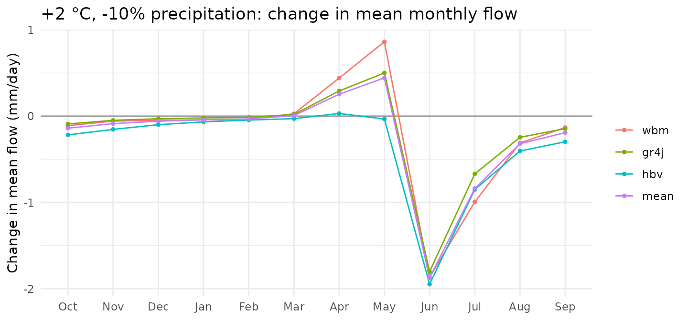
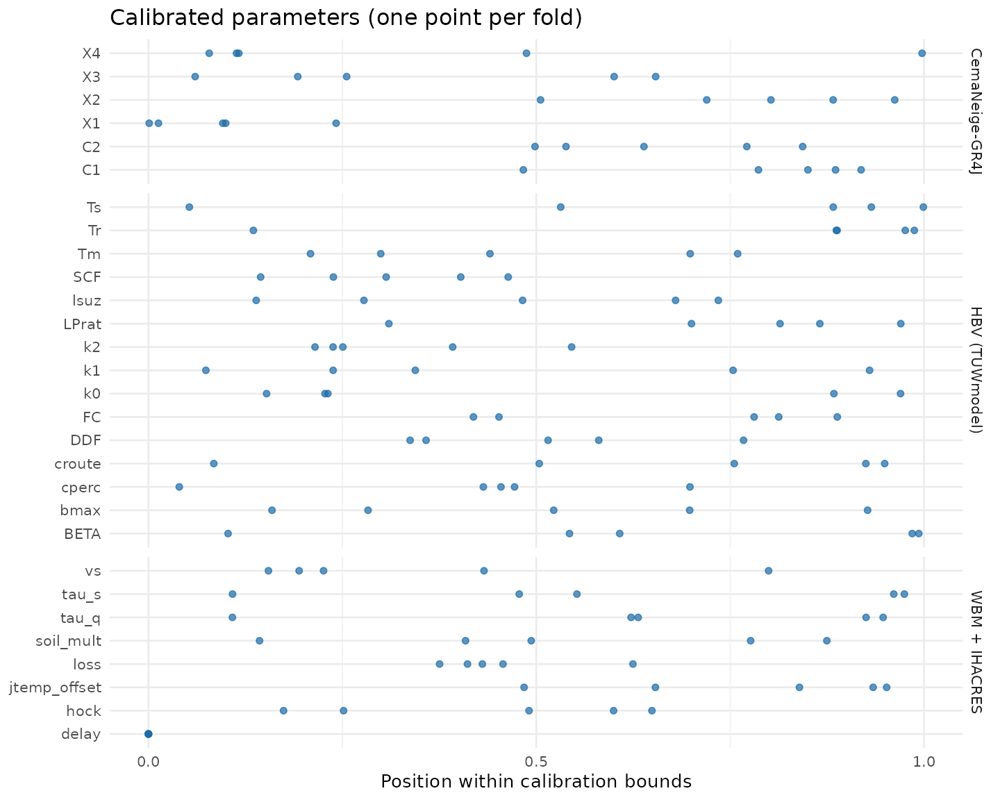

WSVAflowR calibrates several streamflow models on the same gauge, with the same climate forcing and the same tests, so you can compare them fairly and then drive all of them with a different climate. This vignette runs the whole workflow on a basin that ships with the package, so nothing is downloaded.
library(WSVAflowR)
options(wsva.data_dir = file.path(tempdir(), "wsva")) # where caches go (default: a per-user cache folder)A basin
A wsva_basin holds a watershed, its daily flow, climate
forcing and basin attributes. example_basin() is Clear
Creek above Clear Creek Reservoir in Colorado: a 174 km² snowmelt basin
whose gauge is operated by the Colorado Division of Water Resources
(CDSS station CCACCRCO).
b <- example_basin()
b
#> <wsva_basin> CCACCRCO CLEAR CREEK ABOVE CLEAR CREEK RESERVOIR, CO.
#> flow: CDSS, 1999-10-01 to 2016-09-30, 100% observed
#> watershed: StreamStats (CO), 173.6 km2 (reference 174.1 km2 from GAGES-II, -0.3%)
#> forcing: GridMET (national files) 1999-10-01 to 2016-09-30
#> attributes: addedFor your own gauge, the same object comes from a few calls (they need
network access; see vignette("your-flow-data")):
b <- wsva_basin_usgs("01154000") # a USGS gauge, or
b <- wsva_basin(flow_cdss("CCACCRCO")) # a Colorado DWR gauge, or
b <- wsva_basin(flow_from_csv("q.csv", q_col = "Q", lon = -105.3, lat = 40.0))
b <- add_forcing(b) # GridMET basin-mean climate
b <- add_basin_attributes(b) # terrain, soils, rain/snow threshold, land coverBefore fitting, check_basin() looks for problems that
would make results misleading: too short a record, a watershed that
disagrees with the published drainage area, a runoff ratio that suggests
imported water or bad precipitation, and flow that may be affected by
people.
check_basin(b)
#> # A tibble: 5 × 3
#> check status detail
#> <chr> <chr> <chr>
#> 1 record length ok 16 water years with >= 80% observed flow inside the fo…
#> 2 drainage area ok watershed 173.6 km2 vs reference 174.1 km2 (-0.3%, GAG…
#> 3 runoff ratio ok Q/P = 0.47
#> 4 human influence ok GAGES-II class: Ref
#> 5 basin size ok 174 km2Fit the models
fit_models() calibrates each model with DDS on KGE and
evaluates it three ways:
- Blocked cross-validation. The record is cut into 5 blocks of whole water years; each block is predicted by a model calibrated on the others. This gives an honest skill score and a continuous out-of-sample series.
- Climate-contrast test. Calibrate on the wettest (or driest, coolest, warmest, earliest) third of the years and test on the opposite third: a check on how a model transfers to a different climate.
-
Full-record calibration. One parameter set fit on
every year, used by
predict()to run the model with new forcing.
The default budget is 1,000 model runs per calibration. This vignette uses 100 and three of the five models to stay quick; results are cached, so re-running a fit only recomputes what changed.
fits <- fit_models(b, models = c("wbm", "gr4j", "hbv"), n_evals = 100)
#> WBM + IHACRES: blocked
#> WBM + IHACRES: climate_contrast
#> WBM + IHACRES: full record
#> CemaNeige-GR4J: blocked
#> CemaNeige-GR4J: climate_contrast
#> CemaNeige-GR4J: full record
#> HBV (TUWmodel): blocked
#> HBV (TUWmodel): climate_contrast
#> HBV (TUWmodel): full record
fits
#> <wsva_fit> CCACCRCO CLEAR CREEK ABOVE CLEAR CREEK RESERVOIR, CO.
#> CDSS flow; StreamStats (CO) watershed, 174.1 km2; forcing GridMET (national files)
#> models: WBM + IHACRES, CemaNeige-GR4J, HBV (TUWmodel)
#> designs: blocked, climate_contrast + full-record calibration
#> median test KGE (blocked CV): CemaNeige-GR4J 0.87; Model mean 0.83; HBV (TUWmodel) 0.79; WBM + IHACRES 0.79; DOY climatology 0.57Skill
s <- summary(fits)
s
#> CCACCRCO CLEAR CREEK ABOVE CLEAR CREEK RESERVOIR, CO.
#>
#> Held-out water years (blocked CV, median over folds; pbias > 0 = under-prediction):
#> model kge nse log_nse pbias kge_worst
#> CemaNeige-GR4J 0.87 0.78 0.84 1.87 0.55
#> Model mean 0.83 0.85 0.83 2.90 0.67
#> HBV (TUWmodel) 0.79 0.77 0.78 -0.28 0.57
#> WBM + IHACRES 0.79 0.77 0.67 3.14 0.68
#> DOY climatology 0.57 0.62 0.87 0.55 0.51
#>
#> Opposite-climate tests (median over contrasts):
#> model kge kge_drop abs_pbias worst_abs_pbias worst_contrast
#> HBV (TUWmodel) 0.85 -0.062 6.9 13 dry -> wet
#> CemaNeige-GR4J 0.72 0.146 8.7 15 dry -> wet
#> WBM + IHACRES 0.82 -0.037 9.0 10 cool -> warmkge, nse and log_nse are
medians over the five held-out blocks (log_nse weights low
flows); pbias is the percent bias (positive means the model
under-predicts). The model mean averages the models’
daily flows and is often better than any one of them. The DOY
climatology is a benchmark that just predicts each calendar
day’s average flow: a model has to beat it to be adding anything. In a
regular snowmelt basin like this one it is a strong benchmark for low
flows (compare log_nse), even though the models beat it
easily on overall KGE.
plot(fits, type = "skill")
plot(fits)
Transfer to a different climate
The second table in the summary, and the plot below, come from the climate-contrast test. Models that keep their skill and, above all, their water balance (small bias) when calibrated in one climate and tested in another are the safer choice for projections.
plot(fits, type = "contrast")
Run the models with a different climate
predict() with new forcing runs every model with its
full-record parameters. PET is recomputed from the new temperature,
humidity, radiation and wind with the same Penman-Monteith method used
in calibration. A simple sensitivity test: 2 °C warmer and 10% less
precipitation than the historical record.
hist <- b$forcing
warm_dry <- transform(hist, tmin_c = tmin_c + 2, tmax_c = tmax_c + 2, tmean_c = tmean_c + 2,
prcp_mm = prcp_mm * 0.9)
q0 <- predict(fits, forcing = hist)
q1 <- predict(fits, forcing = warm_dry)
models <- c("wbm", "gr4j", "hbv", "mean")
change <- sapply(models, function(m) 100 * (mean(q1[[m]], na.rm = TRUE) / mean(q0[[m]], na.rm = TRUE) - 1))
round(change, 1) # percent change in mean flow
#> wbm gr4j hbv mean
#> -22.3 -22.8 -40.7 -28.7The models agree on the direction but not the size of the change. That spread is part of the uncertainty in any projection, and the reason for running several models rather than one.
month <- factor(month.abb[as.integer(format(q0$date, "%m"))], levels = month.abb[c(10:12, 1:9)])
monthly <- function(q) sapply(models, function(m) tapply(q[[m]], month, mean, na.rm = TRUE))
d <- as.data.frame(as.table(monthly(q1) - monthly(q0)))
names(d) <- c("month", "model", "change_mm_day")
library(ggplot2)
ggplot(d, aes(month, change_mm_day, color = model, group = model)) +
geom_hline(yintercept = 0, color = "grey60") + geom_line() + geom_point(size = 1) +
labs(x = NULL, y = "Change in mean flow (mm/day)", color = NULL,
title = "+2 °C, -10% precipitation: change in mean monthly flow") +
theme_minimal()
With climate projections, the same call runs each model on each climate model’s historical and future forcing; comparing the two runs of the same climate model gives the projected change.
Parameters
head(coef(fits), 10)
#> # A tibble: 10 × 3
#> model param value
#> <chr> <chr> <dbl>
#> 1 wbm hock 4.26
#> 2 wbm jtemp_offset 2.46
#> 3 wbm soil_mult 0.954
#> 4 wbm tau_q 23.4
#> 5 wbm tau_s 373.
#> 6 wbm vs 0.241
#> 7 wbm loss 0.298
#> 8 wbm delay 0
#> 9 gr4j X1 28.5
#> 10 gr4j X2 -0.779
plot(fits, type = "params")